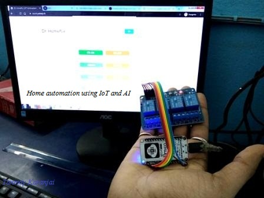

Hello
everyone
I am Tanmoy Karanjai
This is
my portfolio
You can get my CV here
Qualification:
Bachelor of
Technology in Electronics and Communication
Engineering
from Institute of Engineering &
Management, saltlake ,kolkata
CGPA 7.97
Diploma in electronics and
Telecommunication Engineering
from Ramakrishna
Mission Shilpapitha ,Belghoria
pertentage 73.2%
Projects:
1. A website for our school using HTML
2. Solar mobile charger cum power bank
3. Line follower robot
4. AC light dimmer circuit using Arduino
5. Home automation solution using IoT and AI (Using
Node MCU)

6. Electronic Grass cutting machine
Troubleshooting:
I have repair some Bluetooth wireless speaker,
headphones and emergency charger light.
skill:
C programming, JAVA ,PYTHON
MS Office ,HTML ,Arduino , MATLAB
Electronic Circuit Design ,PCB Designing
Web Designing ,Photo Editing ,Video Editing
Team
Work ,Presentation Skill ,Time Management
Troubleshooting Of Electronic Devices
LANGUAGES KNOWN : Bengali, Hindi ,English
Training:
1.Vocational Training On Advanced Telecomm In BSNL Training Centre In Kalyani
2.Vocational Traning On Eastern Railway ,Kolkata
OFC system , Electronic Telephone Exchange, Rail Net
System ,VHF communication system ,
Public
Address System , 4 wire control communication ,
Route Relay Interlocking System,
Electronic Interlocking , MSDAC
3.Vocational Traing In Metro Rail ,Kolkata
4.Optical Fiber Splicer Training In BSNL Training Centre In Kalyani
5.Short Term Course In Central Tool Room And Training Center(MSME), Kolkata.
A> Industrial Automation(PLC ) (1 Month)
Logic Control
Relay Logic
Contractor
Programming PLC By Simatic Manager
Language (LAD,STL,FBD)
Drives (*AC/DC)
Profibus And Remote Interface
B> SCADA(15 Days) (Supervisory Control And Data
Acquisition )
PLC ,SCADA project using WinCC software ,Interfacing
with physical load
C> Embedded System(1 Month)
Basics of microprocessor 8085 & microcontroller
8051, overview of ARM-7 , CROSSWARE SOFTWARE
LPC 2148 TRAINING KIT ,interfacing with LED ,sensor
& motor . project : line follower robot.
D> CCNA (Cisco Certified Network Associate)
(Routing & Switching) (4 Months)